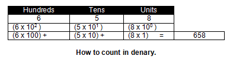
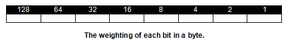
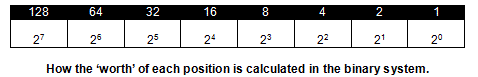
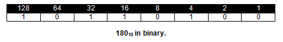
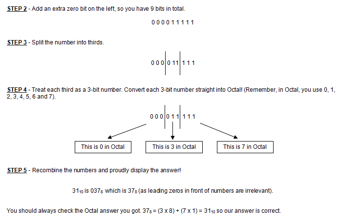

<div id="jsn-maincontent" class="span9 order1 row-fluid">
  <div id="jsn-maincontent_inner">
    <div id="jsn-centercol">
      <div id="jsn-centercol_inner">
        <div id="jsn-mainbody-content" class="jsn-hasmainbody">
          <div id="jsn-mainbody-content-inner1">
            <div id="jsn-mainbody-content-inner2">
              <div id="jsn-mainbody-content-inner3">
                <div id="jsn-mainbody-content-inner4" class="row-fluid">
                  <div id="jsn-mainbody-content-inner" class="span12 order1">
                    <div id="jsn-mainbody">
                      <div id="system-message-container"></div>

                      <div
                        class="item-page"
                        itemscope
                        itemtype="https://schema.org/Article"
                      >
                        <meta itemprop="inLanguage" content="en-GB" />

                        <div itemprop="articleBody">
                          <p></p>
                          <h1 style="text-align: center">
                            Denary, Binary and Hex numbers and converting
                            between them
                          </h1>
                          <p class="NormalContent">
                            <strong class="NormalContentHeading"
                              >Introduction</strong
                            ><br />
                            The common numbering system we use in our daily
                            lives is called the 'denary' system, or counting
                            using 'base 10'. In practice, what this means is
                            that we count using 10 different digits:
                            0,1,2,3,4,5,6,7,8 and 9. We have also seen that it
                            isn't just a digit that is important. It is the
                            <strong><em>position</em> </strong>of the digit
                            relative to the other digits in a number that is
                            also important. For example, consider the digit 6.
                            It is worth one amount if it is on its own. It is
                            worth a different amount in 63, and worth a lot more
                            in 6324, and a lot less in 54.68. In all these
                            examples, the amount that the digit is worth is
                            determined by where exactly it is in relation to the
                            other digits in the number.
                          </p>

                          <p class="NormalContent">
                            Let's look at a number, for example 658. How do we
                            know how much this number is 'worth'? We know
                            because without thinking about it, we judge the
                            digits that make up the number relative to the other
                            digits! When you were at primary school, you may
                            have been helped to learn your numbers by writing
                            down column headings for a particular number, just
                            so you could get used to the idea that position is
                            important. For example, consider what the number 658
                            means.
                          </p>
                          <p class="NormalContent" align="center">
                            
                          </p>
                          <p class="NormalContent">
                            Of course, when you are working doing maths you
                            (probably) don't write down the headings anymore.
                            You don't need to because you're so used to counting
                            in base 10. Until you are experts in the other
                            counting systems you need to look at, you should get
                            into the habit of writing down the 'worth' of each
                            position.
                          </p>
                          <p class="NormalContent">
                            <strong class="NormalContentHeading"
                              >The binary number system</strong
                            ><br />
                            Computers make heavy use of the binary counting
                            system. The reason for this is that the electronic
                            circuits that make up a computer are essentially
                            made up of millions and millions of switches. The
                            switches can have two states - on or off. The actual
                            position of any particular switch relative to other
                            switches is also very important. (In fact, a switch
                            can have three states: on, off and ‘not connected’,
                            but that is beyond this book)!
                          </p>
                          <p class="NormalContent">
                            The base 10 system (denary) uses 10 digits, zero to
                            nine. The base 2 system (binary) uses just 2 digits
                            (or 'bits') zero and one. We are going to start our
                            work by using groups of 8 bits, known as a ‘byte’.
                          </p>
                          <p class="NormalContent">
                            Here is one possible allocation of the 'worth' of
                            each bit in my byte.
                          </p>
                          <p class="NormalContent" align="center">
                            
                          </p>
                          <p class="NormalContent">
                            It is not just whether a bit is a one or a zero that
                            is important. The position of the bit in the whole
                            byte is also important. The bit on the left is
                            'worth' far more than the bit on the right, for
                            example. This is for no other reason than it is the
                            way I have defined it.
                          </p>
                          <p class="NormalContent">
                            Incidentally, you can see when I used the denary
                            system, there was a pattern to working out the
                            'worth' of each position. It went 10<sup>3</sup>,
                            10<sup>2</sup>, 10<sup>1</sup>,
                            10<sup>0</sup>&nbsp;and so on. (Any number to the
                            power of zero is one)! There is a similar pattern
                            when using base 2.
                          </p>
                          <p class="NormalContent" align="center">
                            
                          </p>
                          <p class="NormalContent">
                            <strong class="NormalContentHeading"
                              >Counting<br /></strong
                            >Starting at 0, we can now start counting in binary.
                          </p>
                          <table
                            style="width: 300px; background-color: #f6e74c"
                            border="0"
                          >
                            <tbody>
                              <tr>
                                <td style="width: 50%; text-align: center">
                                  0
                                </td>
                                <td style="text-align: center">0000 0000</td>
                              </tr>
                              <tr>
                                <td style="text-align: center">1</td>
                                <td style="text-align: center">0000 0001</td>
                              </tr>
                              <tr>
                                <td style="text-align: center">2</td>
                                <td style="text-align: center">0000 0010</td>
                              </tr>
                              <tr>
                                <td style="text-align: center">3</td>
                                <td style="text-align: center">0000 0011</td>
                              </tr>
                              <tr>
                                <td style="text-align: center">4</td>
                                <td style="text-align: center">0000 0100</td>
                              </tr>
                              <tr>
                                <td style="text-align: center">5</td>
                                <td style="text-align: center">0000 0101</td>
                              </tr>
                              <tr>
                                <td style="text-align: center">6</td>
                                <td style="text-align: center">0000 0110</td>
                              </tr>
                              <tr>
                                <td style="text-align: center">7</td>
                                <td style="text-align: center">0000 0111</td>
                              </tr>
                              <tr>
                                <td style="text-align: center">8</td>
                                <td style="text-align: center">0000 1000</td>
                              </tr>
                              <tr>
                                <td style="text-align: center">9</td>
                                <td style="text-align: center">0000 1001</td>
                              </tr>
                              <tr>
                                <td style="text-align: center">10</td>
                                <td style="text-align: center">0000 1010</td>
                              </tr>
                              <tr>
                                <td style="text-align: center">11</td>
                                <td style="text-align: center">0000 1011</td>
                              </tr>
                              <tr>
                                <td style="text-align: center">12</td>
                                <td style="text-align: center">0000 1100</td>
                              </tr>
                              <tr>
                                <td style="text-align: center">13</td>
                                <td style="text-align: center">0000 1101</td>
                              </tr>
                              <tr>
                                <td style="text-align: center">14</td>
                                <td style="text-align: center">0000 1110</td>
                              </tr>
                            </tbody>
                          </table>
                          <p class="NormalContent">
                            Can you continue counting from 15 upwards to 30?
                          </p>
                          <p class="NormalContent">
                            <strong class="NormalContentHeading"
                              >An example of using the binary system</strong
                            ><br />
                            Imagine I want to keep a record of the score of one
                            set of throws in a darts match! The minimum score we
                            need to hold is zero. The maximum is 180, and the
                            score will always be an integer, a whole number i.e.
                            you cannot score 34.5, for example. So now, to
                            represent 180, I would set the bits as shown on the
                            next page. (Note: when I talk about 'setting a bit'
                            I mean that it is made a 'one'. When I talk about
                            resetting a bit, it is made a 'zero').
                          </p>
                          <p class="NormalContent" align="center">
                            
                          </p>
                          <p class="NormalContent">
                            Incidentally, the maximum number that I can
                            represent using my system is 255. I don't need
                            numbers this high for my darts score, but it is
                            always nice to know what the maximum number you can
                            store is. This is shown next.
                          </p>
                          <p class="NormalContent" align="center">
                            
                          </p>
                          <p class="NormalContent">
                            It's also nice to know what the smallest number is
                            using any number system. The smallest number you can
                            represent here is zero. How you do this is shown
                            below.
                          </p>
                          <p class="NormalContent" align="center">
                            
                          </p>
                          <p class="NormalContent">
                            So with this numbering system I can represent any
                            whole number from 0 to 255.
                          </p>
                          <p class="NormalContent">
                            Computers are digital devices! If we had to work in
                            binary all the time, we would soon go mad! The
                            numbers are very long. It takes a while to work them
                            out and it isn't very convenient. There are other
                            numbering systems around that, because of their very
                            close relationship with binary, make them highly
                            suitable. Programmers will sometimes work in binary,
                            for example, but may far more often work in Hex!
                            Using Hex, we can group 4 bits together, to create a
                            'Hex code'. It is a lot easier to remember 4 Hex
                            numbers than 16 bits, for example! To see how this
                            system works, we need to start at the beginning!
                          </p>
                          <p class="NormalContent">
                            <strong class="NormalContentHeading"
                              >Hexadecimal (Hex - base 16)</strong
                            ><br />
                            We have already seen that a digit's worth depends on
                            what position it is in relative to the other digits
                            in the number.
                          </p>
                          <ul>
                            <li style="list-style-type: none">
                              <ul style="list-style-type: disc">
                                <li class="NormalContent">
                                  Base 10 positions are worth 10<sup>7</sup>,
                                  10<sup>6</sup>, 10<sup>5</sup>,
                                  10<sup>4</sup>, 10<sup>3</sup>,
                                  10<sup>2</sup>, 10<sup>1</sup>, 10<sup>0</sup>
                                </li>
                                <li class="NormalContent">
                                  Base 2 positions are worth 2<sup>7</sup>,
                                  2<sup>6</sup>, 2<sup>5</sup>, 2<sup>4</sup>
                                  2<sup>3</sup>, 2<sup>2</sup>, 2<sup>1</sup>,
                                  2<sup>0</sup>
                                </li>
                                <li class="NormalContent">
                                  Base 16 positions are worth 16<sup>7</sup>,
                                  16<sup>6</sup>, 16<sup>5</sup>,
                                  16<sup>4</sup>, 16<sup>3</sup>,
                                  16<sup>2</sup>, 16<sup>1</sup>, 16<sup>0</sup>
                                </li>
                              </ul>
                            </li>
                          </ul>
                          <p class="NormalContent">
                            How does the hexadecimal system work? The first
                            thing to note is that there are 16 'numbers' in this
                            system: 0,1,2,3,4,5,6,7,8,9,A,B,C,D,E,F. It may well
                            seem a little odd using letters to represent
                            numbers: 10=A, 11=B, 12=C, 13=D, 14=E, 15=F. With a
                            little practice, you will see what an excellent
                            system this is.
                          </p>
                          <p class="NormalContent">
                            Just to remind you, to show what system is being
                            used when you write down a number, it is common to
                            use a subscript. So for example: 34<sub>10</sub>
                            means (3 x 10) + (4 x 1) whereas 34<sub>16</sub>
                            means (3 x 16) + (4 x 1)
                          </p>
                          <p class="NormalContent">
                            As you know, when we write down numbers in our daily
                            life, we omit the subscript because we assume that
                            every one is using base 10. Sometimes, especially in
                            computer circles, it is a dangerous assumption to
                            make! If there is any doubt, then add a subscript!
                            When doing exam questions, always use a subscript,
                            just to show how clever you are!
                          </p>
                          <p class="NormalContent">
                            Let's convert a few more Hex numbers into denary:
                          </p>
                          <ul>
                            <li style="list-style-type: none">
                              <ul style="list-style-type: disc">
                                <li class="NormalContent">
                                  3C<sub>16</sub> is the same as (3 x 16) + (12
                                  x 1) = 60<sub>10</sub>
                                </li>
                                <li class="NormalContent">
                                  8<sub>16</sub> is the same as (8 x 1) = 8<sub
                                    >10</sub
                                  >
                                </li>
                                <li class="NormalContent">
                                  3AF<sub>16</sub> is the same as (3 x 256) +
                                  (10 x 16) + (15 x 1) = 943<sub>10</sub>
                                </li>
                              </ul>
                            </li>
                          </ul>
                          <p class="QuestionStyle">
                            <strong
                              class="NormalContentHeading"
                              style="line-height: 1.5"
                              >A better way to convert into and out of Hex<br /></strong
                            >Going from Hex to denary is relatively easy after
                            you've done a few of them. You have to think a
                            little bit harder going the other way, from denary
                            to Hex. But there is a better way! If you remember,
                            we said that Hex and binary were very closely
                            related. As long as we can do binary to denary
                            conversion off the top of our heads, there is a
                            method for converting denary to Hex, and also back
                            again, very quickly. See if you can follow this
                            example. We are going to convert 125<sub>10</sub>
                            into a Hex number.
                          </p>
                          <p class="NormalContent">
                            
                          </p>
                          <p class="NormalContent">
                            
                          </p>
                          <p class="NormalContent">
                            
                          </p>
                          <p class="NormalContent">
                            
                          </p>
                          <p class="NormalContent">
                            You should always check the Hex answer you got.
                            7D<sub>16</sub> = (7 x 16) + (13 x 1) = 125<sub
                              >10</sub
                            >
                            so our answer is correct.<br />
                            (Of course, you could always check your answer using
                            a calculator! In Windows, Go to WINDOWS -
                            ACCESSORIES - CALCULATOR - VIEW - SCIENTIFIC).
                          </p>
                          <p class="NormalContent">
                            
                          </p>
                          <p class="NormalContent">
                            
                          </p>
                          <p class="NormalContent">
                            You should always check the Hex answer you got.
                            4B<sub>16</sub> = (4 x 16) + (11x 1) = 75<sub
                              >10</sub
                            >
                            so our answer is correct. t may seem a little
                            long-winded, but this method is very mechanical.
                            Once you've done a few, you'll be an expert.
                            Besides, it's good practice for binary conversion!
                          </p>
                          <p class="NormalContent">
                            <strong>Extension work<br /></strong>Although not in
                            the syllabus, you may want to look at the Octal
                            numbering system. It's actually even easier than Hex
                            once you've done a few examples.
                          </p>
                          <div>
                            <p class="QuestionStyle">
                              <strong
                                class="NormalContentHeading"
                                style="line-height: 1.5"
                                >Octal (base 8)<br /></strong
                              ><span style="line-height: 1.5"
                                >This number system is another important
                                numbering system in computing. Octal, or the
                                base 8 system, uses 8 digits: 0, 1, 2, 3, 4, 5,
                                6 and 7. We have already seen that a digit's
                                worth depends on what position it is in relative
                                to the other digits.</span
                              >
                            </p>
                          </div>
                          <p class="NormalContent">
                            
                          </p>
                          <p class="NormalContent">
                            
                          </p>
                          <p class="NormalContent">
                            
                          </p>
                          <p class="QuestionStyle">
                            <strong
                              class="NormalContentHeading"
                              style="line-height: 1.5"
                              >Extension work - Binary Coded Decimal (BCD)<br /></strong
                            >So far, we have stored numbers as binary, or in a
                            form very close to binary such as Octal and Hex.
                            This is very useful, and allows us to do maths on
                            the codes. In some applications, however, it is more
                            important to maintain a link between the position of
                            a decimal number and the way it is represented in
                            binary. It is useful where you need to store the
                            digits as data type 'character', where you don't do
                            any actual processing on them. An example is a coded
                            sales number.
                          </p>
                          <p class="NormalContent">
                            A mail order company uses codes such as 24361885.
                            This isn't a number! It's a code made up of
                            characters (not 'numbers' in the sense of 'an
                            amount'). The first two characters might be a
                            product code, the third character might be a country
                            code and so on. Now you never 'add' or 'subtract' or
                            do any other maths operations on these codes, but
                            you might need to strip out parts of the code at
                            some point. For example, if you needed to know the
                            country, you would strip out the country character.
                            You could store each character as a byte. If you did
                            this you would need 8 bytes in total (because there
                            are 8 characters). But that is inefficient compared
                            to storing it using BCD. In this system, each
                            character would only need 4 bits, so you would only
                            need a total of 4 bytes to store 8 characters.
                          </p>
                          <p class="NormalContent">
                            Another example of the use of BCD is when you need
                            to store the codes that get displayed on a
                            calculator. Binary Coded Decimal (BCD) is a method
                            for doing just this. You can store each separate
                            digit in a number as a 4 bit code. Each one can then
                            be sent to each part of the display unit that
                            displays just one digit. The BCD can be quickly
                            decoded and turned into instructions that tell the
                            calculator which digit to display. BCD conversion is
                            very straightforward!!
                          </p>
                          <p class="NormalContent">
                            <strong>Work through this example</strong>
                          </p>
                          <p class="NormalContent">
                            
                          </p>
                          <p class="NormalContent">
                            It doesn't matter how many denary digits you have -
                            just convert each one into a 4 bit binary code!
                            Going from BCD to denary is equally straightforward.
                            For example, 0111 1001 1000 0000 0100 is the denary
                            number 79804. Isn't conversion really fast? After a
                            few of these, you hardly need to think!&nbsp;Notice
                            the very close relationship between the position of
                            each denary digit and the position of each 4-bit
                            group.
                          </p>
                          <p></p>
                        </div>
                      </div>
                    </div>
                  </div>
                </div>
              </div>
            </div>
          </div>
        </div>
      </div>
    </div>
  </div>
</div>
